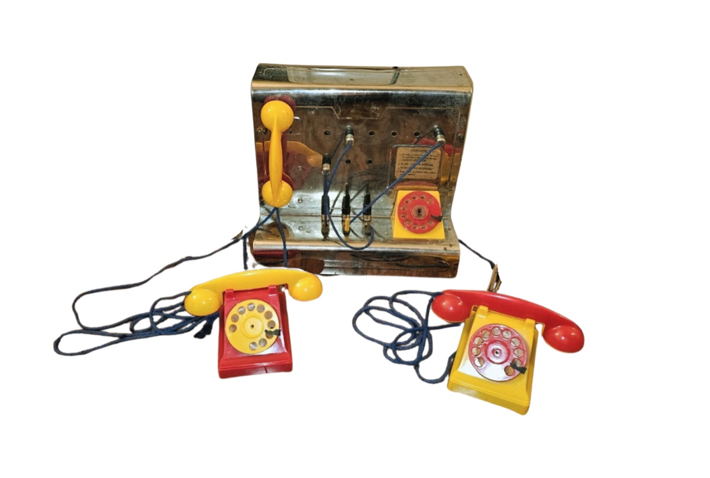
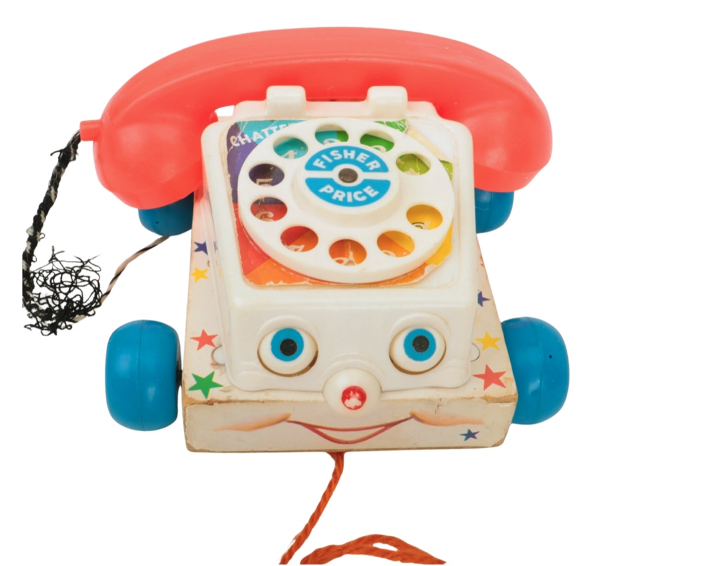
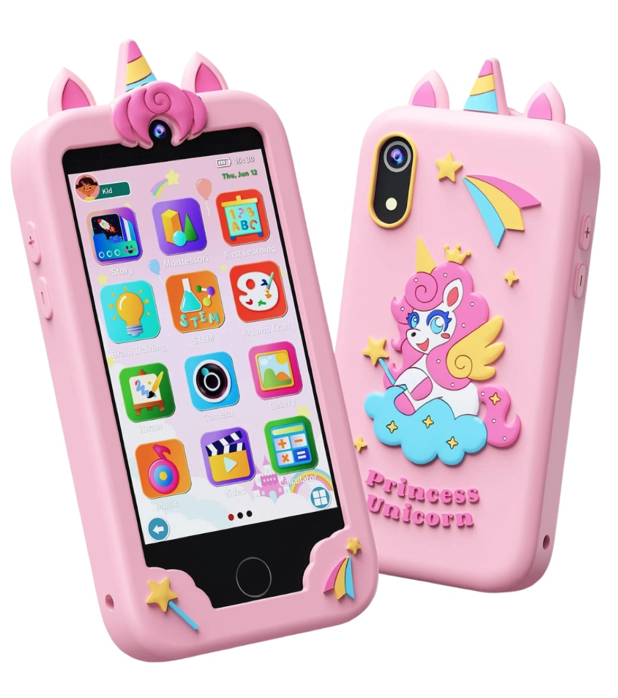

An Encyclopedia of Media Toys is a collection of toys designed to instruct children and the public about how media technology works, from the late nineteenth century to the present.
The objects in this collection belong to the physical Media Lab being developed in the Department of Cinema and Media Studies at the University of Washington. The lab guides our experimental research: we interact with the toys to reveal their affordances and limitations, and that research is the basis for the writing, photography and video on this site. In the long term, we imagine the lab as a space where interdisciplinary scholars, artists and students can develop their own ideas and questions.
01Toys model media
Media toys such as magic lanterns, toy projectors, play telephones and kit radios give physical form to social discourses about technology. They articulate social expectations of how children and adults can and should interact with media technology. Such expectations vary with cultural and historical contexts and are embedded in hierarchies of gender, race, age and class.
Consider three toy telephones: the Kampak “Ring ’n Buzz” Switchboard from the 1950s, the Fisher-Price “Chatter Telephone” from the 1960s, and the Kokodi Kids Smartphone from the 2020s.



While the telephone’s basic function did not change in the ten years separating the “Ring ’n Buzz” and the “Chatter,” the two toys offer vastly different representations of telephony. The 1950s toy represents the technological infrastructure of telecommunications: for media historians, it offers a more-or-less accurate schematic of how telephone signal switching works. Children at play are invited to imagine themselves as the operator making the medium work. Children playing with the “Chatter,” on the other hand, are invited to imagine themselves as telephone customers. With its friendly face and cheerful voice, the toy represents the telephone as a portal to social connection.
Yet the “Chatter” still offers a technological training of sorts. When it was created, dial service, which replaced the live operator with a dial tone and a rotary device, was still new in many parts of the United States. The decade between the two toys saw dramatic changes as computer automation transformed switchboards and exchanges: the “Ring ’n Buzz” had prepared children for a profession that would soon disappear, while the “Chatter” shifts the child, and the locus of technical aptitude, from service provider to service user. The toy smartphone, in turn, centers photography and gaming as the phone’s central functions and offers a “safe” training ground for exploring a touchscreen interface.
Toys represent media through their affordances: the range of things one can do with them. Some are full working models. Toy magic lanterns and projectors of the early twentieth century were less powerful miniatures of their grown-up counterparts and used many of the same tools and formats as professional theater technology. Others, like toy printing presses with rubber rather than metal type, are simplified working models. Still others, like the “Ring ’n Buzz,” offer fairly accurate schematics of how a technology works, while many toys mystify technical function and center the social or imaginative processes media make possible. Toys can showcase or obscure the mechanisms of tools and machines; they are also cultural products that construct and cultivate public fascination with technological marvels.
02Questions
The collection focuses on toys that represent or recreate media technologies, primarily North American toys of the twentieth century. It is the occasion for comparisons and contextual analyses guided by four sets of questions:
- What genres of media toys are available to children? What kinds of media representation exist beyond the models outlined above? How do we distinguish toys that are career-focused and skill-oriented from those that center entertainment?
- What major changes in media history and the history of technology do these toys represent?
- What political and socioeconomic conditions do these toys embody? How do they articulate gender, nation and age?
- How does one play with media toys? What are their instructions, and what affordances do they have beyond them? How have they been broken and repaired? What, if anything, can we learn about real play?
03Why play? Why objects?
The collection draws on Mal Ahern’s research collection of media historical objects, built over more than a decade. While that collection is broad and includes professional-grade media equipment, toys emerged as especially useful objects for representing, discussing and critically analyzing media history.
That interest took shape in the classroom. In Autumn 2025, in Being Human with Technology, a special topics course in Cinema and Media Studies, students used optical toys like the camera lucida, circuit-building toys like Makey Makey, and craft toys like Play-Doh. These hands-on, playful experiences opened class discussion onto theories of technological affordance.
The theory of affordances asks us to describe an object not by its intended or customary purpose, but by the forms of interaction, support and resistance it offers a person. To understand an object’s affordances, we must interact with it in unstructured, open-ended ways: we must play. Hands-on exploration of media artifacts is an expanding methodology across media archaeology, the history of technology and artistic research. It is difficult to give a full account of a medium only from secondary documentation. Interacting with artifacts does not give us access to the experience of historical actors, but, as Wolfgang Ernst, Lori Emerson and others have argued, it does let us observe how media technologies address the user and make use of space and time.
Play “is the mother of every habit.”
Walter Benjamin’s writings on toys and play inspire the project. For Benjamin, play is the space where children, or adults, explore the limits and potentials of wholly new material forms and processes: the cinema, the city, the assembly line. He insists on actual play over and against the toy’s intended use. “The most enduring modifications in toys,” he writes, are “the result of children at play,” not the work of adults. Adults impose toys on children as “cult implements,” but toys “became toys only afterward, partly through the child’s power of imagination.”
Toys “became toys only afterward, partly through the child’s power of imagination.”
We cannot write about toys only by reading about them in books or examining photographs. We must play ourselves to be able to articulate their meaning.
04Digital humanities methodology
Object-based research, made public
An Encyclopedia of Media Toys joins hands-on, experimental work with physical objects to the methods of the digital humanities. Each step turns play in the lab into something others can search, compare and build on.
-
Structured cataloging
Every object is described with consistent metadata (accession number, maker, model, date, origin, materials, parts and related media) recorded in the lab’s collection database and published from it, so the catalog grows as the collection does.
-
Experimental play, documented
We play with each toy to find its affordances and limits, and record what we find in photographs, video and written description. Documentation is the research output, not only an illustration of it.
-
Comparison at scale
Filters, search and an A–Z index let readers set toys side by side across decades, categories and makers, like the three telephones above, and trace how toys model changing media technologies.
-
Minimal, sustainable infrastructure
Following the minimal-computing principles of tools like CollectionBuilder, the site is static HTML generated from the collection spreadsheet. It needs very little maintenance, has no database or server to keep running, and can move easily between hosting services.
05Timeline
- Summer 2026Catalog the media toys, with basic metadata and historical information for each object.
- Summer 2026Photograph and film the objects, exploring them hands-on in the lab in Padelford Hall.
- End of fellowshipA functional web-based catalog of An Encyclopedia of Media Toys.
- Summer–Fall 2026Comparative and contextual essays addressing the project’s guiding questions.
- End of 2026A finished website that can serve as the basis for further support for the physical lab.
06Fellowship
An Encyclopedia of Media Toys is supported by a Digital Humanities Summer Fellowship from the Simpson Center for the Humanities at the University of Washington. The fellowship supports building the catalog and its photographic and video content over Summer and Fall 2026, and tests what a physical media lab can contribute to object-based research in Cinema and Media Studies.
07People
Principal Investigators
Mal Ahern
Assistant Professor, Cinema & Media Studies
Mal Ahern works across media studies, film, photography, print culture, critical theory and the history of science and technology. She holds a PhD in Film and Media Studies and History of Art from Yale University. Her fellowships include an American Council of Learned Societies Individual Fellowship and a Signature Course Fellowship from Notre Dame’s Institute for Ethics and the Common Good, and she received Screen’s Annette Kuhn First Essay Award.
She has built the lab’s research collection of media historical objects for more than a decade, and brings five years of experience as a collection cataloger and registrar, including work on the web-based collection catalog at the Museum of the Moving Image. She trained in CollectionBuilder at DHSI in Victoria through a previous Digital Humanities Summer Fellowship at the Simpson Center.
Jingrui “Rey” Yan
PhD Candidate, Cinema & Media Studies
Rey Yan studies media technology, infrastructure and critical theory. Her dissertation, “Dreams of Earth and Sky,” examines Chinese visual culture of the cosmos since the 1980s across film, contemporary art and mass media. She is Managing Editor of Feminist Media Histories.
She was previously an archive manager at the Chinese Modern Art Archives in Beijing and an assistant editor for the Journal of Chinese Cinemas. Her database project “Women’s Labor in Chinese Cinema” was supported by the Simpson Center for the Humanities. With an undergraduate degree in media production, she brings training in photography and video to the project.
Graduate Student Assistant
Omair Danish
Graduate Student, Cinema & Media Studies
Omair Danish is a graduate student in Cinema and Media Studies whose interests include new media, video games, piracy, science and technology, urban studies, and postcolonial and South Asian media. He holds a B.S. in Social Sciences and Liberal Arts from the Institute of Business Administration, Karachi.
08Acknowledgments
Thanks to our 2026–2027 Simpson Center Summer Fellowship cohort: Ashfaq Ahmed, Vanessa de Veritch Woodside, Andrew Hedding, Meichun Liu, Nikoloz Nadirashvili, Paul Jason Perez and Zhifan Sheng; and to Eric W. Johnson, Digital History Specialist in the Department of History.
Thanks to Steven Dillmann for website technology support.